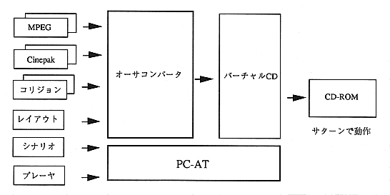

An overview of the functions of this system is shown below.
- Make movie file and collision file interleaved. Actual interleaving is performed by a virtual CD. The author converter creates an interleave definition file.
- Outputs a script file for creating a CD-ROM image. The virtual CD creates a CD-ROM image based on this script file.
The system image of the author converter is shown in Figure 3.1.

Figure 3.1 System image